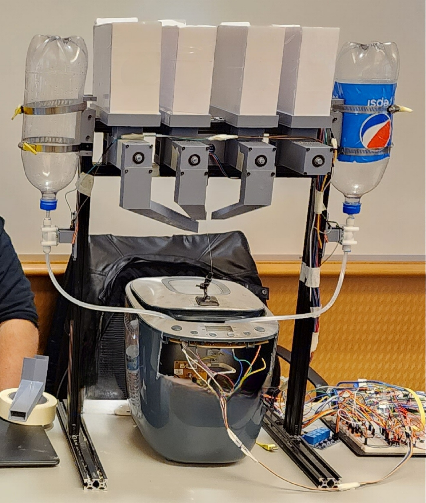

Projects
Bread Recipe Autonomous Device (BRAD)
BRAD was my senior design project during my undergrad. BRAD is a fully autonomous bread maker complete with web app control. All the user needs to do is make sure BRAD has access to ingredients by filling the top containers. Using the web app, the user can start the bread making process from wherever they are and have fresh bread by the time they get home.

Project Title 2
Description of Project 2.

Project Title 3
Description of Project 3.

Project Title 4
Description of Project 4.

Project Title 5
Description of Project 5.

Project Title 6
Description of Project 6.